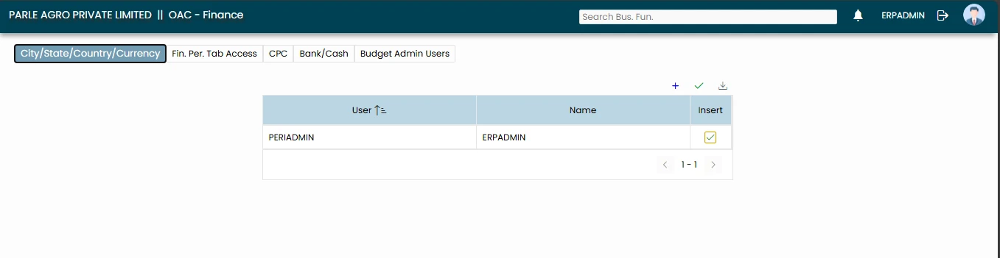
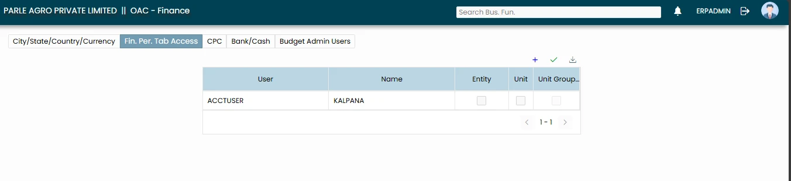
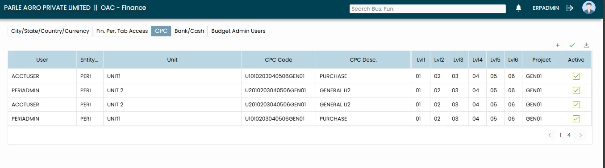
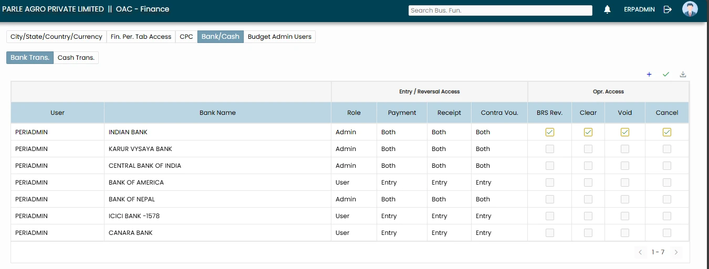
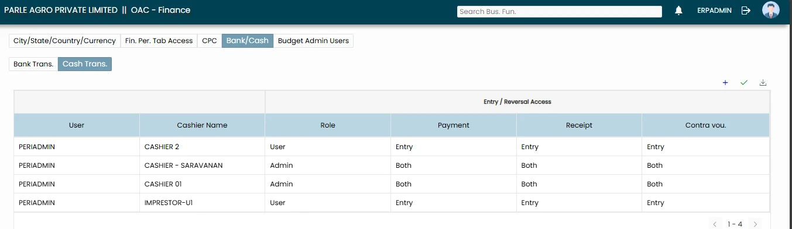

<div data-category="Financials" data-title="OAC - Finance" data-updated="December 01, 2025" data-contributors="RoadmapIT" data-breadcrumb="Home,Financials,OAC - Finance">
  <div class="page-content">
    <p>This screen is used to provide/update the Access for Cost center, financial period, and city/state/country and Bank transaction operations.</p>
    <h5>Navigation path:</h5>
    <p class="fs-6">Financials \ setup \ Fin. Year/Periods \ OAC – Finance</p>
    <h2>City/State/Country/Currency</h2>
    
    <h2>Fin. Per. Tab Access</h2>
    
    <ul style="list-style-type: none; align-content: center">
      <li class="mouse-icon">
        Click
        <i class="bi bi-plus fs-4 mx-2 text-primary"></i>
        to add new access
      </li>
      <li class="mouse-icon">Select the User from LOV</li>
      <li class="mouse-icon">Check the Unit or Entity checkbox as per Control</li>
      <li class="mouse-icon">
        Click
        <i class="bi bi-check-lg fs-4 mx-2 text-success"></i>
        to save
      </li>
    </ul>
    <h2>Profit/Cost Center - Unit</h2>
    
    <h2>Bank/Cash-Bank Trans.</h2>
    
    <h2>Cash Trans.</h2>
    
  </div>
</div>
